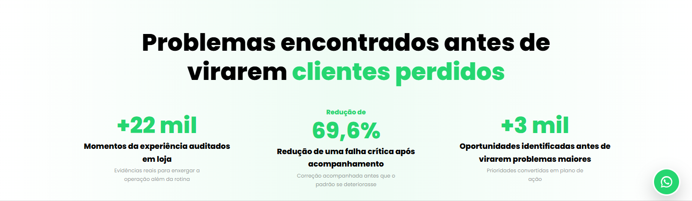
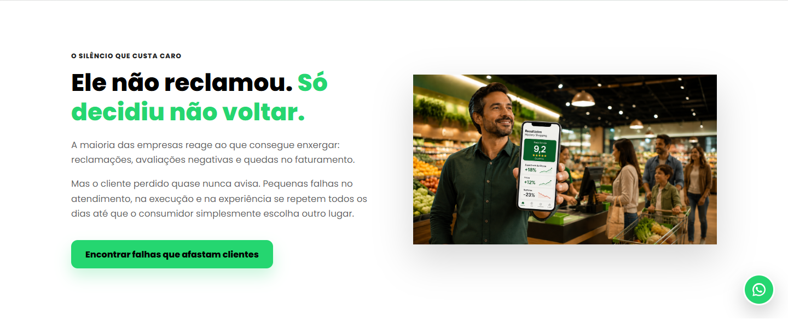
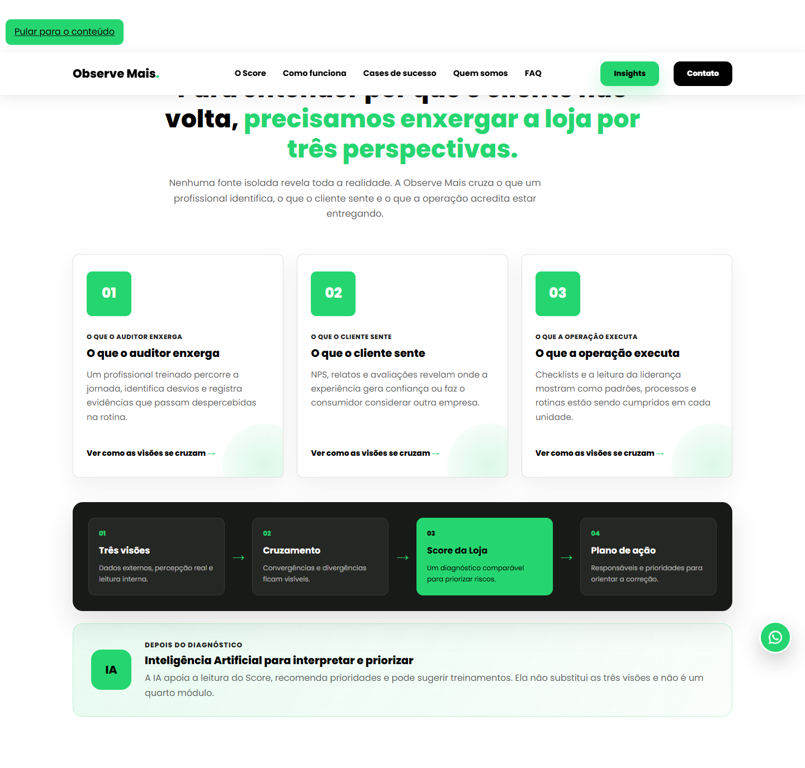
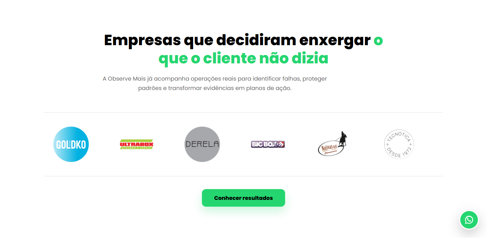
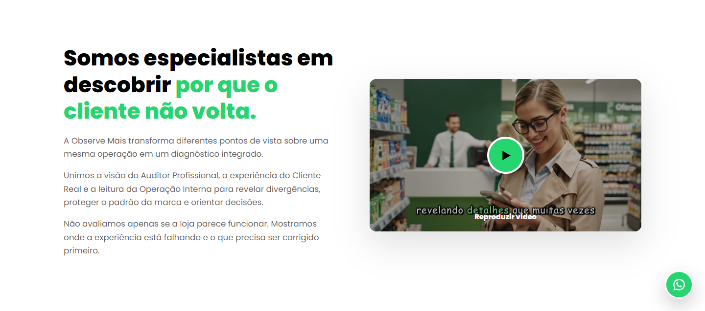
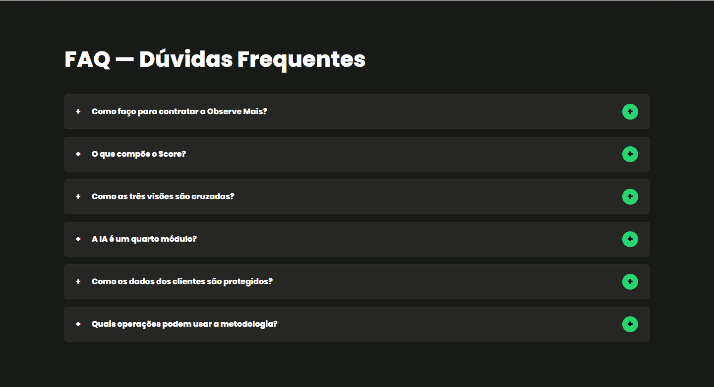

Veredito Executivo
REPROVADO para campanha vertical de supermercados sem refatoração
O site atual tem boa base técnica e uma narrativa forte de “cliente que não volta”, mas ainda fala com operações genéricas. Para donos de supermercados, falta sentir imediatamente a rotina de margem apertada, fila, ruptura percebida, preço ausente, validade, limpeza, checkout e concorrente próximo. A hero chega perto, mas ainda não trava a conversa no supermercado.
Fontes e Padrão SEO
Critério usado: conteúdo útil para pessoas, title/H1 alinhados à intenção, imagens próximas de texto relevante com alt descritivo, schema apenas para conteúdo visível real e sem promessa de ranking.
Fontes oficiais: SEO Starter Guide, Image SEO Best Practices, Structured Data Guidelines, Mobile-first indexing.
Agentes Acionados
| Agente | Decisão | Por quê |
|---|---|---|
| @ONB | Escopo: validação, não refatoração | O pedido pede diagnóstico com documento e permite apenas renomeação. |
| @MKT:supermercado | Verticalizar 100% para supermercados | A página atual ainda dilui a persona em “operações multiunidade”. |
| @MKT:persona | Hero deve falar com dono/diretor | A dor precisa aparecer como perda silenciosa operacional, não como frase genérica. |
| @MKT | Reestruturar SEO por intenção comercial | Termos prioritários: cliente oculto para supermercados, auditoria de experiência em loja, qualidade operacional de supermercado. |
| @MKT:validator | Bloquear claims sem prova | Métricas como ROI, redução e cases precisam de fonte, autorização ou nota explícita. |
| @C_Cetico | Plano aprovado só com ressalvas | As recomendações dependem de provas comerciais, metodologia real e autorização de imagens/clientes. |
Resumo por Eixo
| Eixo | Status | Ação necessária |
|---|---|---|
| Persona supermercado | Não conforme | Trocar linguagem genérica por dono/diretor/gestor de supermercado. |
| Hero e primeira dobra | Não conforme | Mostrar perda silenciosa no supermercado já no H1, imagem e CTA. |
| Imagens | Parcial | Algumas remetem a supermercado, mas precisam parecer menos genéricas e mais operacionais. |
| SEO técnico básico | Conforme com ressalvas | Metas existem, mas title/description/Hs devem focar supermercado. |
| Prova e confiança | Parcial | Separar clientes supermercadistas, depoimentos autorizados e exemplos anonimizados. |
| Conversão | Parcial | CTA precisa virar diagnóstico/checklist para supermercado, menos amplo. |
| Mensuração | Parcial | Definir eventos de clique, envio de lead, scroll de prova e escolha de variante. |
Área 1 - Hero
Estado atual
Problema: a imagem mostra supermercado, mas o texto ainda poderia servir para varejo, restaurante ou hotelaria. Falta a dor do dono: loja cheia, margem apertada e venda perdida por detalhes invisíveis.
Decidido por: @MKT:supermercado@MKT:persona@C_Cetico
Prompt de imagem: Foto realista horizontal 16:9 dentro de um supermercado brasileiro de médio porte, corredor de mercearia e hortifruti ao fundo, um dono/gestor observando discretamente fila no caixa e gôndola com produto sem preço, clima profissional e consultivo, iluminação natural de loja, sem logotipos de marcas reais, sem texto na imagem, sem pessoas identificáveis olhando para a câmera, espaço limpo à esquerda para headline, cores neutras com acento verde #25D670 em elementos sutis de interface sobrepostos.
Área 2 - Métricas
Estado atual

Problema: números chamam atenção, mas não estão amarrados a supermercado. O claim “69,6%” é forte e precisa de fonte, contexto ou anonimização.
Decidido por: @MKT:validator@C_Cetico
Cards: Auditorias em corredores, checkout e atendimento; falhas críticas acompanhadas; oportunidades priorizadas por impacto operacional.
Cards: Fila e caixa; preço e exposição; atendimento, limpeza e validade.
Prompt de imagem: Composição editorial 16:9 de indicadores reais de supermercado, close em checklist de auditoria em tablet com categorias fila, preço, ruptura, validade, limpeza e atendimento, ao fundo caixa e gôndolas desfocados, estilo fotográfico premium B2B, sem marcas, sem números inventados, sem texto legível além de rótulos genéricos, acento verde #25D670.
Área 3 - Dor / Custo da Inação
Estado atual

Problema: “cliente que não voltou” é bom, mas falta supermercado concreto: perecíveis, checkout, promoções, preço ausente, ruptura e concorrência de bairro.
Decidido por: @MKT:supermercado@MKT:persona
CTA: Encontrar perdas silenciosas da loja
CTA: Receber um diagnóstico de loja
Prompt de imagem: Cena realista em supermercado brasileiro: gestor olhando relatório em tablet enquanto ao fundo há fila moderada no caixa, etiqueta de preço ausente em uma prateleira e repositor ajustando gôndola, tom sério e operacional, sem dramatização, sem logotipos, sem texto legível, fotografia corporativa natural, acentos verdes discretos.
Área 4 - Solução / Score
Estado atual

Problema: a estrutura das três visões é boa, mas os cards ainda falam abstrato. Para supermercado, cada visão precisa revelar itens de auditoria que o dono reconhece na hora.
Decidido por: @MKT@MKT:supermercado
Fluxo: Evidências por setor -> divergências -> prioridade por loja -> plano de correção.
Fluxo: Visita oculta -> relatório -> Score -> reunião de ação.
Prompt de imagem: Infográfico fotorealista 16:9 sobre cliente oculto em supermercado, três painéis visuais sem texto legível: auditor profissional com checklist, cliente real no corredor escolhendo produto, gerente conferindo execução interna; todos convergem para dashboard central com score abstrato, visual limpo, fundo de supermercado, verde #25D670, sem logotipos.
Área 5 - Plataforma / Relatório
Estado atual
Problema: boa seção para explicar método, mas falta exemplo de relatório específico para supermercado e priorização por setor.
Decidido por: @MKT@C_Cetico
Blocos: fila, preço, ruptura, validade, limpeza, atendimento.
Blocos: evidência, gravidade, responsável, prazo e nova medição.
Prompt de imagem: Mockup realista de dashboard B2B em notebook e tablet sobre mesa de reunião de supermercado, gráficos por loja e setores como checkout, hortifruti, mercearia, açougue e atendimento, cards de prioridade sem números específicos, visual moderno, limpo, branco/preto/verde #25D670, sem marca real e sem texto pequeno ilegível.
Área 6 - Clientes / Prova
Estado atual

Problema: há logos fortes, inclusive supermercados, mas a página mistura segmentos. Para vender ao supermercadista, separar “redes e mercados atendidos” dos demais segmentos aumenta relevância.
Decidido por: @MKT:validator@MKT:supermercado
Nota: Exibir apenas clientes autorizados do varejo alimentar.
Nota: Separar supermercado, food service e varejo em tabs.
Prompt de imagem: Foto institucional 16:9 de reunião entre consultor e dono de supermercado em sala simples anexa à loja, mesa com relatório impresso anonimizado e tablet, gôndolas visíveis ao fundo pela porta, clima de confiança e operação real, sem logotipos, sem rostos reconhecíveis, sem texto legível.
Área 7 - Depoimentos
Estado atual
Problema: depoimentos ajudam, mas precisam de autorização e contexto. Para supermercados, o melhor depoimento fala de execução, padronização, atendimento e plano de ação.
Decidido por: @MKT:validator@C_Cetico
Prompt de imagem: Retrato ambiental não identificável de gerente de supermercado analisando relatório de cliente oculto, foco nas mãos, crachá desfocado sem nome, tablet com gráficos abstratos, fundo com prateleiras organizadas, estilo documental premium, sem logotipo, sem texto legível, iluminação realista.
Área 8 - Sobre / Método
Estado atual

Problema: bom institucional, mas precisa provar metodologia: como visita, o que mede, como protege privacidade e como transforma evidência em ação.
Decidido por: @MKT@MKT:validator
Blocos: visita, checklist, evidência, score, plano.
Blocos: anonimato, critérios, recorrência, devolutiva.
Prompt de imagem: Cena horizontal 16:9 de auditor profissional em supermercado preenchendo checklist discreto no celular, foco no método e não em espionagem, ambiente claro, funcionários e clientes desfocados e não identificáveis, sem uniforme de fiscalização, sem marcas, estética séria e confiável, acento verde #25D670.
Área 9 - Simulador ROI
Estado atual
Problema: é uma boa ferramenta de conversão, mas as hipóteses (+10% cupons, +12% ticket) são sensíveis. Para excelência SEO/comercial, manter disclaimer e transformar em “simulação de cenário”, não promessa.
Decidido por: @MKT:validator@C_Cetico@BI
Campos: lojas, cupons, ticket, margem, visitas ocultas.
Conversão: Captura lead com menor risco de claim financeiro.
Prompt de imagem: Imagem 16:9 de calculadora/relatório em tela de tablet sobre carrinho de compras, com categorias operacionais de supermercado e indicadores abstratos, sem valores financeiros específicos, sem promessas de ROI, visual limpo B2B, verde #25D670 como destaque, fundo de loja real desfocado.
Área 10 - FAQ
Estado atual

Problema: FAQ responde dúvidas gerais do Score. Para supermercado, deve responder objeções comerciais reais: frequência, anonimato, setores medidos, fotos, privacidade, devolutiva e implantação.
Decidido por: @MKT:persona@MKT
Prompt de imagem: Não usar imagem nesta área. Preferir FAQ textual rastreável, escaneável e com schema FAQPage apenas se as perguntas/respostas estiverem visíveis na página e forem aprovadas comercialmente.
Área 11 - CTA Final
Estado atual
Problema: CTA atual é forte, mas ainda amplo. Deve fechar com ação específica: diagnóstico de loja, checklist de cliente oculto ou conversa com especialista em supermercado.
Decidido por: @MKT:persona@MKT:supermercado
CTA: Agendar diagnóstico do supermercado
CTA: Receber checklist de cliente oculto
Prompt de imagem: Imagem de fundo 16:9 para CTA final, supermercado brasileiro visto do alto em horário de movimento moderado, caixa e corredores organizados, clima de oportunidade e controle operacional, sem texto, sem marcas, sem rostos identificáveis, espaço central livre para chamada, paleta preto/branco com acento verde #25D670.
Plano de Refatoração Recomendado
| Prioridade | Ação | Owner | Critério de aceite |
|---|---|---|---|
| 1 | Refazer hero com promessa, imagem e CTA 100% supermercado. | @MKT:supermercado + @D | Primeira dobra responde: para quem, dor, resultado e próximo passo. |
| 2 | Reescrever title, meta description, H1/H2 e FAQ para intenção comercial vertical. | @MKT | Sem stuffing; cada heading ajuda a decisão do supermercadista. |
| 3 | Trocar ou regenerar imagens por cenas reais de supermercado e relatórios anonimizados. | @D + @MKT:validator | Alt text descritivo, arquivo com nome semântico e imagem próxima ao texto relacionado. |
| 4 | Reorganizar prova social por segmento e remover qualquer claim sem fonte. | @C_Cetico + @MKT:validator | Cliente, depoimento e número só entram com autorização/fonte ou como exemplo anonimizado. |
| 5 | Transformar ROI em simulação segura ou checklist de diagnóstico. | @BI + @MKT:persona | Evento de conversão mensurável e disclaimer claro. |
| 6 | Validar mobile, performance percebida e acessibilidade. | @Q + @P | `npm.cmd run check` verde + smoke 390/768/1440 px. |
Checklist do Cliente
Use estes checks para escolher a direção antes da refatoração.
Veredito Cético Final
@C_Cetico: o plano é bom, mas só deve entrar em implementação quando houver decisão sobre qual opção por área será usada, quais clientes/depoimentos podem aparecer, quais números têm fonte e se o simulador de ROI continuará como conversão principal. Sem isso, a refatoração corre risco de ficar bonita, mas frágil em prova comercial e SEO.
Próximo passo obrigatório: cliente escolher opções A/B no documento; depois abrir spec de refatoração com critérios de aceite e smoke responsivo.